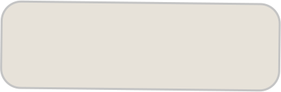
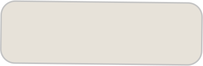

Use the internet! Which of the presented problems has the most research and logical explanation out of the
ones you listed?
step 1
step2
step 3
step 4
Theory of Relativity
next

 

step 1 :A
step2
step 3
step 4
Time
What is time? How can we measure time? Who decides how time moves?


step 1
step2 :A
step 3
step 4
Newton defined time as something continuous. So we can’t control it. On the other hand, Einstein
redefined it as a “relative illusion”
What is a relative illusion?